¡El acceso a la justicia es tu derecho!
No te quedes de brazos cruzados
En México estamos acostumbrados a dejar pasar muchas cosas que violentan nuestros derechos, no sabemos cuáles o no sabemos qué se puede hacer al respecto.
En la CDMX existen muchas instancias judiciales diseñadas para proteger tus derechos y muchas formas de asegurar la atención por parte de ellas. Aquí te explicaremos todo lo que tienes que saber para hacer uso de ellas.
